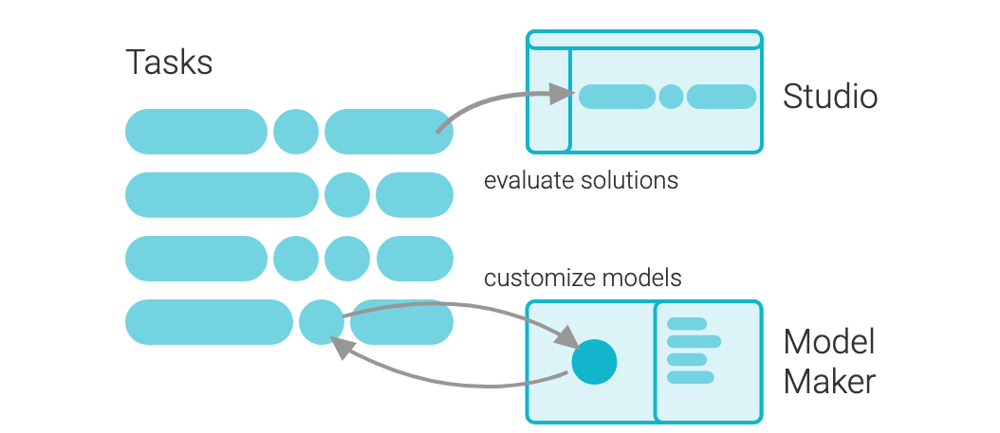
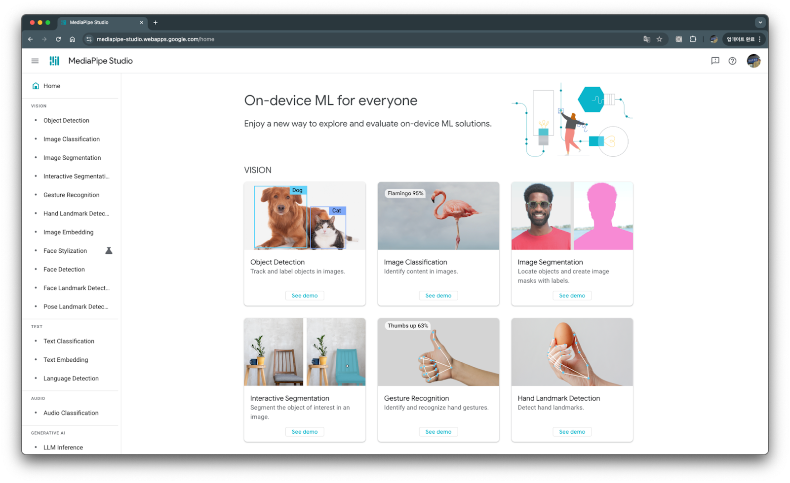
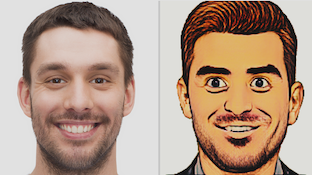
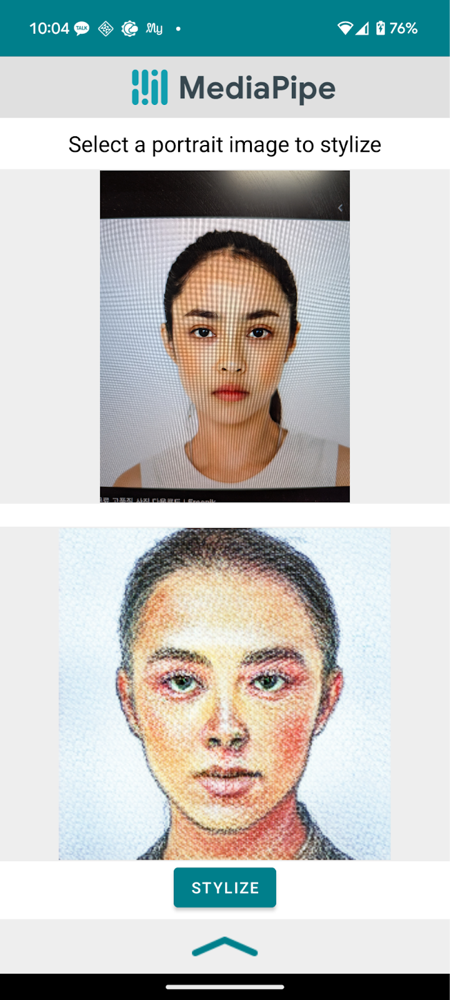
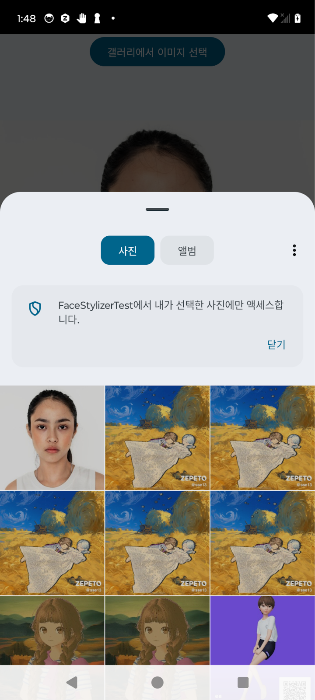
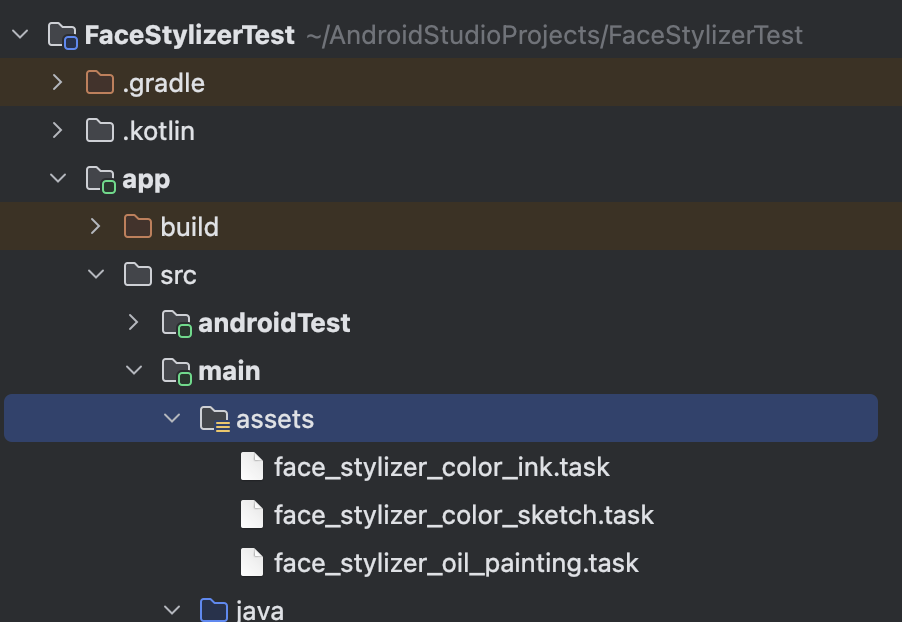
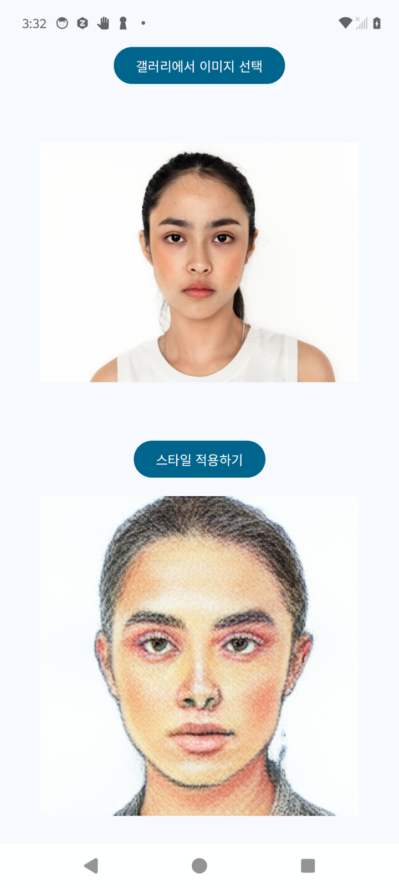

여러분의 참가자분들이 별도의 결제 수단(예: 신용카드) 등록 없이 Google Cloud Platform을 무료로 사용할 수 있도록, 아래 링크를 제공합니다.
Google 계정으로 회원가입하고 Free Tier를 활성화하는 방법은 [별도 안내 자료(Deck)](첨부 예정)에서 확인할 수 있습니다.
중요:
Last Updated: 2025-04-26
MediaPipe 솔루션을 사용하면 머신러닝(ML) 솔루션을 앱에 적용할 수 있습니다. 이 솔루션으로 제공되는 프레임워크를 통해 사용자에게 즉각적이고, 매력적이고, 유용한 출력을 제공하는 사전 빌드된 처리 파이프라인을 구성할 수 있습니다. MediaPipe Model Maker를 사용해서 이러한 솔루션을 맞춤설정하여 기본 모델을 업데이트할 수도 있습니다.

다음 라이브러리와 리소스는 각 MediaPipe 솔루션의 핵심 기능을 제공합니다.
다음 도구를 사용하여 솔루션을 맞춤설정하고 평가할 수 있습니다.
MediaPipe Studio를 이용하면 Android 디바이스 없이도, 브라우저에서 바로 다양한 솔루션(예: 얼굴 스타일 변환, 객체 감지, 손 랜드마크 감지 등)을 테스트할 수 있습니다.
➔ MediaPipe Studio로 이동해서 데모 체험하기: https://mediapipe-studio.webapps.google.com/home

이 Codelab에서는 비어 있는 프로젝트로 시작하여 MediaPipe 태스크를 사용하여 Android 기기에서 로컬로 실행되는 "얼굴 스타일 지정 (Face Stylizer)" 솔루션을 직접 적용하는 방법을 배워봅니다.
이 코드랩은 MediaPipe Face Stylizer 기능을 Android 앱에 통합하는 실습을 중심으로 구성되어 있습니다.
참여 대상: Android Studio와 Kotlin/Compose 기본 사용법에 익숙한 개발자
만약 Android SDK나 Compose 기초가 필요하다면, 다음 공식 자료를 참고하세요:
MediaPipe Face Stylizer 작업을 사용하면 이미지의 얼굴에 얼굴 스타일 지정을 적용할 수 있습니다. 이 태스크를 사용하여 다양한 스타일의 가상 아바타를 만들 수 있습니다.

이 작업에서는 얼굴 생성기와 얼굴 인코더로 구성된 BlazeFaceStylizer 모델을 사용합니다. StyleGAN 모델 제품군의 경량 구현인 BlazeStyleGAN 얼굴 생성기는 지정된 스타일에 따라 얼굴을 생성하고 수정합니다. MobileNet V2 백본을 사용하는 얼굴 인코더는 입력 이미지를 얼굴 생성기에서 생성한 얼굴에 매핑합니다. 얼굴 스타일라이저를 사용하려면 얼굴 스타일 지정 모델을 다운로드하여 프로젝트 디렉터리에 저장해야 합니다. 각 모델은 입력 이미지 내 얼굴에 특정 스타일을 적용하도록 학습되었습니다.
이 모델은 얼굴을 색연필 획과 브러시 획으로 스케치를 모방한 이미지로 변환합니다. 이 모델을 학습하는 데 사용되는 스타일은 아래와 같습니다.
모델 이름 | 입력 셰이프 | 양자화 유형 | 버전 |
256 x 256 x 3 | Float32 |
이 모델은 얼굴을 수채화 그림을 모방한 이미지로 변환합니다. 이 모델을 학습하는 데 사용되는 스타일은 아래와 같습니다.
모델 이름 | 입력 셰이프 | 양자화 유형 | 버전 |
256 x 256 x 3 | Float32 |
이 모델은 얼굴을 유화를 모방한 이미지로 변환합니다. 이 모델을 학습하는 데 사용되는 스타일은 아래와 같습니다.
모델 이름 | 입력 셰이프 | 양자화 유형 | 버전 |
256 x 256 x 3 | Float32 |
Face Stylizer는 Mediapipe 공식 GitHub에서도 Android 샘플 프로젝트를 제공합니다.
실습 중 참고하거나 추가 학습을 원할 경우, 다음 링크를 활용할 수 있습니다.
👉공식 Mediapipe Face Stylizer Android 샘플 코드

이 코드랩에서는 Android Studio를 사용하여 Compose 기반 Android 프로젝트를 생성합니다.
항목 | 설정 값 |
Name | FaceStylizerApp |
Package Name | 원하는 이름 사용 (예: com.example.facestylizer) |
Language | Kotlin |
Minimum SDK | API 24 이상 |
dependencies {
// MediaPipe Tasks Android 라이브러리 추가
implementation 'com.google.mediapipe:tasks-vision:0.10.14'
// // 이미지 표시
implementation "io.coil-kt:coil-compose:2.7.0"
}Face Stylizer를 적용하려면 먼저 사용자의 얼굴 이미지를 준비해야 합니다.
이 단계에서는 갤러리에서 이미지를 선택하는 기능을 구현합니다.
GalleryPicker.kt 클래스를 새로 생성해 줍니다.
import android.net.Uri
import androidx.activity.compose.rememberLauncherForActivityResult
import androidx.activity.result.contract.ActivityResultContracts
import androidx.compose.foundation.layout.Box
import androidx.compose.foundation.layout.fillMaxWidth
import androidx.compose.material3.Button
import androidx.compose.material3.Text
import androidx.compose.runtime.Composable
import androidx.compose.ui.Alignment
import androidx.compose.ui.Modifier
import androidx.activity.result.PickVisualMediaRequest
@Composable
fun GalleryPicker(
onImageSelected: (Uri) -> Unit
) {
val launcher = rememberLauncherForActivityResult(
contract = ActivityResultContracts.PickVisualMedia()
) { uri: Uri? ->
uri?.let { onImageSelected(it) }
}
Box(
modifier = Modifier.fillMaxWidth(),
contentAlignment = Alignment.TopCenter
) {
Button(onClick = {
launcher.launch(
PickVisualMediaRequest(ActivityResultContracts.PickVisualMedia.ImageOnly)
)
}) {
Text(text = "갤러리에서 이미지 선택")
}
}
}이 코드랩에서는 ActivityResultContracts.PickVisualMedia() API를 사용하여 사진 선택기를 호출합니다. 사용자는 시스템 Photo Picker 화면에서 직접 사진을 선택하거나 취소할 수 있습니다. 사진 선택 도구 코드에 대해서 자세 알고 싶다면 다음 링크를 참조하세요.
GalleryPicker 를 사용해 이미지를 표시해줄 MainScreen 을 만들어 줍니다.
import android.net.Uri
import androidx.compose.foundation.layout.Arrangement
import androidx.compose.foundation.layout.Column
import androidx.compose.foundation.layout.aspectRatio
import androidx.compose.foundation.layout.fillMaxSize
import androidx.compose.foundation.layout.fillMaxWidth
import androidx.compose.runtime.Composable
import androidx.compose.runtime.getValue
import androidx.compose.runtime.mutableStateOf
import androidx.compose.runtime.remember
import androidx.compose.runtime.setValue
import androidx.compose.ui.Modifier
import androidx.compose.ui.unit.dp
import coil.compose.AsyncImage
@Composable
fun MainScreen(
modifier: Modifier = Modifier
) {
var selectedImageUri by remember { mutableStateOf<Uri?>(null) }
Column(
modifier = modifier
.fillMaxSize(),
verticalArrangement = Arrangement.spacedBy(16.dp)
) {
// 갤러리 열기 버튼
GalleryPicker(
onImageSelected = { uri ->
selectedImageUri = uri
}
)
// 선택한 이미지 표시
selectedImageUri?.let { uri ->
AsyncImage(
model = uri,
contentDescription = "Selected Image",
modifier = Modifier
.fillMaxWidth()
.aspectRatio(1f)
)
}
}
}앱을 실행해서 사진이 잘 선택 되는 지 확인합니다.

이제 갤러리에서 선택한 이미지를 Mediapipe Face Stylizer를 통해 변환하는 기능을 구현합니다. 이 단계에서는 Mediapipe Tasks SDK를 이용해 Face Stylizer를 초기화하고, 선택한 이미지를 스타일링한 결과를 Compose 화면에 표시합니다.
이전 3.3 Gradle 설정에서 다음 의존성을 추가했는지 다시 확인합니다
dependencies {
implementation 'com.google.mediapipe:tasks-vision:0.10.14'
}App 모듈 하단에 download_models.gradle 파일을 생성합니다.
/*
* Copyright 2023 The TensorFlow Authors. All Rights Reserved.
*
* Licensed under the Apache License, Version 2.0 (the "License");
* you may not use this file except in compliance with the License.
* You may obtain a copy of the License at
*
* http://www.apache.org/licenses/LICENSE-2.0
*
* Unless required by applicable law or agreed to in writing, software
* distributed under the License is distributed on an "AS IS" BASIS,
* WITHOUT WARRANTIES OR CONDITIONS OF ANY KIND, either express or implied.
* See the License for the specific language governing permissions and
* limitations under the License.
*/
//모델 다운로드 task 정의
tasks.register('downloadColorInkTask', Download) {
src 'https://storage.googleapis.com/mediapipe-models/face_stylizer/blaze_face_stylizer/float32/latest/face_stylizer_color_ink.task'
dest project.ext.ASSET_DIR + '/face_stylizer_color_ink.task'
overwrite false
}
tasks.register('downloadColorSketchTask', Download) {
src 'https://storage.googleapis.com/mediapipe-models/face_stylizer/blaze_face_stylizer/float32/latest/face_stylizer_color_sketch.task'
dest project.ext.ASSET_DIR + '/face_stylizer_color_sketch.task'
overwrite false
}
tasks.register('downloadOilPainting', Download) {
src 'https://storage.googleapis.com/mediapipe-models/face_stylizer/blaze_face_stylizer/float32/latest/face_stylizer_oil_painting.task'
dest project.ext.ASSET_DIR + '/face_stylizer_oil_painting.task'
overwrite false
}
// 빌드 전에 모델 다운로드
preBuild.dependsOn downloadColorInkTask, downloadColorSketchTask, downloadOilPainting
app/build.gradle 파일에서 asset 디렉토리 경로를 설정하고 모델 다운로드 스크립트를 가져옵니다.
plugins {
// 모델 다운로드를 위해 추가
id("de.undercouch.download")
}
// import DownloadModels task
extra["ASSET_DIR"] = "${projectDir}/src/main/assets"
extra["TEST_ASSETS_DIR"] = "${projectDir}/src/androidTest/assets"
// Download default models; if you wish to use your own models then
// place them in the "assets" directory and comment out this line.
apply(from = "download_models.gradle")
// 기존에 추가한 부분
dependencies {
implementation 'com.google.mediapipe:tasks-vision:0.10.14'
}buildscript {
dependencies {
classpath("de.undercouch:gradle-download-task:5.6.0")
}
}여기까지 추가하고 앱을 실행해주면, 앱이 빌드하면서 자동으로 main 밑에 asset 폴더를 만들고 download_models.gradle 스크립트에서 선언해준 기존 task 를 다운로드 받습니다.
app/
└─ src/
└─ main/
└─ assets/
└─ face_stylizer.task
FaceStylizationHelper 클래스는 MediaPipe Face Stylizer 모델을 Android 앱에 쉽게 통합하기 위해 설계된 도우미(Helper) 클래스입니다.
이 클래스는 다음과 같은 기능을 제공합니다:
FaceStylizationHelper를 사용하면 복잡한 설정 과정을 직접 관리하지 않고, 간단한 API 호출만으로 스타일 변환 기능을 손쉽게 구현할 수 있습니다.
공식 예제에 있는 클래스를 그대로 활용합니다.
import android.content.Context
import android.graphics.Bitmap
import android.util.Log
import com.google.mediapipe.framework.image.BitmapImageBuilder
import com.google.mediapipe.tasks.core.BaseOptions
import com.google.mediapipe.tasks.vision.facestylizer.FaceStylizer
import com.google.mediapipe.tasks.vision.facestylizer.FaceStylizer.FaceStylizerOptions
import com.google.mediapipe.tasks.vision.facestylizer.FaceStylizerResult
class FaceStylizationHelper(
private val modelPosition: Int,
private val context: Context,
var faceStylizerListener: FaceStylizerListener? = null
) {
private var faceStylizer: FaceStylizer? = null
init {
setupFaceStylizer()
}
/**
* FaceStylizer를 초기화합니다.
* 선택된 modelPosition에 따라 다른 모델 파일을 로드합니다.
*/
private fun setupFaceStylizer() {
val baseOptionsBuilder = BaseOptions.builder()
// Sets the model selection.
baseOptionsBuilder.setModelAssetPath(
when (modelPosition) {
0 -> MODEL_PATH_COLOR_SKETCH
1 -> MODEL_PATH_COLOR_INK
2 -> MODEL_PATH_OIL_PAINTING
else -> throw Throwable("Invalid model type position")
}
)
try {
// 옵션 빌드 및 FaceStylizer 인스턴스 생성
val baseOptions = baseOptionsBuilder.build()
val optionsBuilder = FaceStylizerOptions.builder()
.setBaseOptions(baseOptions)
val options = optionsBuilder.build()
faceStylizer = FaceStylizer.createFromOptions(context, options)
} catch (e: IllegalStateException) {
// 일반적인 초기화 오류 처리
faceStylizerListener?.onError(
"Face stylizer failed to initialize. See error logs for " +
"details"
)
Log.e(
TAG,
"Face stylizer failed to load model with error: " + e.message
)
} catch (e: RuntimeException) {
// GPU 미지원 기기에서 발생할 수 있는 오류 처리
// This occurs if the model being used does not support GPU
faceStylizerListener?.onError(
"Face stylizer failed to initialize. See error logs for " +
"details", GPU_ERROR
)
Log.e(
TAG,
"Face stylizer failed to load model with error: " + e.message
)
}
}
/**
* 주어진 Bitmap을 스타일 변환하여 결과를 반환합니다.
* - 변환 시간(inference time)을 함께 측정합니다.
*/
fun stylize(bitmap: Bitmap): ResultBundle {
val mpImage = BitmapImageBuilder(bitmap).build()
var timestampMs = System.currentTimeMillis()
val result = faceStylizer?.stylize(mpImage)
timestampMs = System.currentTimeMillis() - timestampMs
return ResultBundle(result, timestampMs)
}
/**
* 스타일링 결과를 Bitmap으로 변환합니다.
*
* @param result 스타일링된 얼굴 정보와 추론 시간을 포함한 ResultBundle
* @return 스타일링된 얼굴 이미지의 Bitmap, 또는 스타일링 결과가 없는 경우 null
*/
@OptIn(ExperimentalStdlibApi::class)
fun convertStylizedFaceToBitmap(result: ResultBundle): Bitmap? {
// 결과가 없거나 스타일링된 이미지가 없는 경우 null 반환
if (result.stylizedFace == null || result.stylizedFace.stylizedImage().getOrNull() == null) {
return null
}
// 스타일링된 얼굴 이미지 정보 가져오기
val image = result.stylizedFace
// 이미지 데이터를 ByteBuffer로 추출
val byteBuffer = ByteBufferExtractor.extract(image.stylizedImage().get())
// 이미지 크기 정보 가져오기
val width = image.stylizedImage().get().width
val height = image.stylizedImage().get().height
// 추출한 정보로 새 Bitmap 생성
val bitmap = createBitmap(width, height)
// ByteBuffer의 픽셀 데이터를 Bitmap에 복사
bitmap.copyPixelsFromBuffer(byteBuffer)
return bitmap
}
/**
* 사용이 끝난 후 FaceStylizer 리소스를 해제합니다.
*/
fun close() {
faceStylizer?.close()
}
/**
* 스타일링 결과와 처리 시간을 묶어 반환하는 데이터 클래스입니다.
*/
data class ResultBundle(
val stylizedFace: FaceStylizerResult?, // 스타일링된 결과 (FaceStylizerResult)
val inferenceTime: Long, // 처리 소요 시간 (ms 단위)
)
companion object {
// 모델 파일 경로 상수
const val MODEL_PATH_OIL_PAINTING = "face_stylizer_oil_painting.task"
const val MODEL_PATH_COLOR_INK = "face_stylizer_color_ink.task"
const val MODEL_PATH_COLOR_SKETCH = "face_stylizer_color_sketch.task"
const val OTHER_ERROR = 0
const val GPU_ERROR = 1
private const val TAG = "FaceStylizationHelper"
}
/**
* FaceStylizer 오류 발생 시 호출되는 리스너 인터페이스
*/
interface FaceStylizerListener {
fun onError(error: String, errorCode: Int = OTHER_ERROR)
}
}
FaceStylizerHelper 를 MainScreen 에서 사용하기 위해서 생성해서 넘겨줍니다.
class MainActivity : ComponentActivity() {
private lateinit var faceStylizationHelper: FaceStylizationHelper
override fun onCreate(savedInstanceState: Bundle?) {
super.onCreate(savedInstanceState)
// TODO
// Activity 레벨에서 Helper 생성
faceStylizationHelper = FaceStylizationHelper(
modelPosition = 0, // 기본 모델 포지션 설정 (예: Color Sketch)
context = this,
faceStylizerListener = object : FaceStylizationHelper.FaceStylizerListener {
override fun onError(error: String, errorCode: Int) {
Log.e("MainActivity", "FaceStylizer Error: $error (code: $errorCode)")
// 필요하면 Toast 띄우거나 UI 업데이트 가능
}
}
)
enableEdgeToEdge()
setContent {
FaceStylizerTestTheme {
Scaffold(modifier = Modifier.fillMaxSize()) { innerPadding ->
// TODO
// MainScreen에 helper를 넘긴다!
MainScreen(
modifier = Modifier.padding(innerPadding),
helper = faceStylizationHelper
)
}
}
}
}
override fun onDestroy() {
super.onDestroy()
// Activity 종료 시 리소스 해제
faceStylizationHelper.close()
}
}사용자가 갤러리에서 이미지를 선택 해서 "스타일 적용하기"를 클릭하면,
해당 이미지의 Uri를 가져와 Bitmap으로 변환한 후
val bitmap = loadBitmapFromUri(context, uri)
/**
* Helper 함수: Uri를 Bitmap으로 변환
*/
fun loadBitmapFromUri(context: Context, uri: Uri): Bitmap? {
return try {
context.contentResolver.openInputStream(uri)?.use {
BitmapFactory.decodeStream(it)
}
} catch (e: Exception) {
Log.e("MainScreen", "Failed to load Bitmap from Uri", e)
null
}
}Face Stylizer helper 에 전달하는 코드를 생성해줍니다.
stylized 된 result 는 convertStylizedFaceToBitmap(result) 을 통해 스타일링 된 결과 값을 반환합니다.
bitmap?.let {
val result = helper.stylize(it)
onStylized(helper.convertStylizedFaceToBitmap(result))
}스타일 적용하기 버튼 전체 코드
@Composable
fun StylizeButton(
uri: Uri,
context: Context,
helper: FaceStylizationHelper,
onStylized: (Bitmap?) -> Unit
) {
Box(
modifier = Modifier.fillMaxWidth(),
contentAlignment = Alignment.TopCenter
) {
Button(onClick = {
val bitmap = loadBitmapFromUri(context, uri)
bitmap?.let {
val result = helper.stylize(it)
onStylized(helper.convertStylizedFaceToBitmap(result))
}
}) {
Text(text = "스타일 적용하기")
}
}
}
/**
* Helper 함수: Uri를 Bitmap으로 변환
*/
fun loadBitmapFromUri(context: Context, uri: Uri): Bitmap? {
return try {
context.contentResolver.openInputStream(uri)?.use {
BitmapFactory.decodeStream(it)
}
} catch (e: Exception) {
Log.e("MainScreen", "Failed to load Bitmap from Uri", e)
null
}
}Compose에서는 Image 컴포저블을 사용해 변환된 Bitmap을 바로 화면에 표시할 수 있습니다.
@Composable
private fun StylizedImage(bitmap: Bitmap) {
Image(
bitmap = bitmap.asImageBitmap(),
contentDescription = "Stylized Image",
modifier = Modifier
.fillMaxWidth(0.8f)
.aspectRatio(1f)
)
}asImageBitmap() 확장 함수를 사용하여 Bitmap을 Compose 이미지로 변환합니다.
화면에 보기좋게 맞추기 위해 일부 컴포넌트 modifier 값을 조정한 코드입니다.
@Composable
fun MainScreen(
modifier: Modifier = Modifier,
helper: FaceStylizationHelper
) {
var selectedImageUri by remember { mutableStateOf<Uri?>(null) }
var stylizedBitmap by remember { mutableStateOf<Bitmap?>(null) }
val context = LocalContext.current
Column(
modifier = modifier.fillMaxSize(),
verticalArrangement = Arrangement.spacedBy(16.dp),
horizontalAlignment = Alignment.CenterHorizontally
) {
// 갤러리 열기 버튼
GalleryPicker(
onImageSelected = { uri ->
selectedImageUri = uri
}
)
// 선택한 이미지 표시
selectedImageUri?.let { uri ->
SelectedImage(uri)
StylizeButton(
uri = uri,
context = context,
helper = helper,
onStylized = { stylizedBitmap = it }
)
// 스타일 적용된 이미지 표시
stylizedBitmap?.let { styledBitmap ->
StylizedImage(styledBitmap)
}
}
}
}
@Composable
private fun SelectedImage(uri: Uri) {
AsyncImage(
model = uri,
contentDescription = "Selected Image",
modifier = Modifier
.fillMaxWidth(0.8f)
.aspectRatio(1f)
)
}
@Composable
private fun StylizedImage(bitmap: Bitmap) {
Image(
bitmap = bitmap.asImageBitmap(),
contentDescription = "Stylized Image",
modifier = Modifier
.fillMaxWidth(0.8f)
.aspectRatio(1f)
)
}

MainActivity에서는 기본적으로 Color Sketch 스타일 모델을 사용하도록 설정되어 있습니다. 현재는 modelPosition = 0으로 고정되어 있으며, 앱을 실행하면 항상 "Color Sketch" 스타일로 변환됩니다.
// Activity 레벨에서 Helper 생성
faceStylizationHelper = FaceStylizationHelper(
modelPosition = 0, // 기본 모델 포지션 설정 (예: Color Sketch)
context = this,
faceStylizerListener = object : FaceStylizationHelper.FaceStylizerListener {
override fun onError(error: String, errorCode: Int) {
Log.e("MainActivity", "FaceStylizer Error: $error (code: $errorCode)")
// 필요하면 Toast 띄우거나 UI 업데이트 가능
}
}
)다양한 스타일을 선택해 바꾸는 기능은 Mediapipe 자체를 이해하는 것보다, 오히려 Compose 상태 관리, 리컴포지션 흐름을 활용하는 부분이 더 큰 비중을 차지합니다. 따라서, 이 부분은 "심화" 주제로 남겨두었습니다.
아래 목표를 스스로 구현해보세요!
목표 | 설명 |
1 | 여러 스타일 모델을 선택할 수 있도록 UI를 추가하세요 (예: 드롭다운, 버튼 목록 등) |
2 | 사용자가 모델을 선택하면, 해당 스타일 모델로 FaceStylizationHelper를 다시 초기화하세요 |
3 | 새로운 스타일 모델을 적용한 후, 갤러리에서 선택한 이미지를 스타일링해보세요 |
4 | 필요하다면 모델 변경 시, 현재 선택된 이미지를 자동으로 다시 스타일링하는 기능도 도전해보세요! |
제공된 모델에서 지원하지 않는 새로운 스타일로 얼굴을 변환해야 하는 경우, 사전 학습된 모델을 사용자 데이터와 MediaPipe Model Maker를 사용하여 맞춤 설정할 수 있습니다 . 이 모델 수정 도구는 사용자가 제공한 데이터를 사용하여 모델의 일부를 미세 조정합니다. 이 방법은 새 모델을 처음부터 학습하는 것보다 빠르며, 특정 애플리케이션에 맞게 모델을 조정할 수 있습니다.
다음 섹션에서는 Model Maker를 사용하여 미리 빌드된 모델을 얼굴 스타일 지정을 위해 사용자 데이터로 재학습하는 방법을 보여줍니다. 이 데이터는 MediaPipe Face Stylizer 에서 사용할 수 있습니다 .
MediaPipe Model Maker 패키지는 디바이스 내 머신 러닝(ML) 모델을 사용자 정의하기 위한 low-code 솔루션입니다.
이 노트북은 스타일화된 얼굴의 스타일을 실제 사람 얼굴로 전환하기 위해 얼굴 스타일라이저 모델을 사용자 지정하는 처음부터 끝까지의 프로세스를 보여줍니다.
모델 학습은 아래의 Colab 환경에서 진행합니다.
pip install mediapipe-model-maker다음 코드를 사용하여 필요한 Python 클래스를 가져옵니다.
from google.colab import files
import os
import tensorflow as tf
assert tf.__version__.startswith('2')
from mediapipe_model_maker import face_stylizer
from mediapipe_model_maker import image_utils
import matplotlib.pyplot as plt얼굴 스타일라이저 모델을 재학습하려면 사용자가 스타일화된 얼굴 이미지 하나를 제공해야 합니다. 스타일화된 얼굴은 정면을 향하고 좌우 눈과 입이 모두 보이는 상태여야 합니다. 얼굴은 요, 피치, 롤 축을 기준으로 30도 미만의 미세한 회전만 있어야 합니다.
다음 예에서는 양식화된 얼굴 이미지를 제공하고 이미지를 시각화하는 방법을 보여줍니다.
style_image_path = 'color_sketch.jpg'
!wget -q -O {style_image_path} https://storage.googleapis.com/mediapipe-assets/face_stylizer_style_color_sketch.jpg# @title Visualize the training image
import cv2
from google.colab.patches import cv2_imshow
style_image_tensor = image_utils.load_image(style_image_path)
style_cv_image = cv2.cvtColor(style_image_tensor.numpy(), cv2.COLOR_RGB2BGR)
cv2_imshow(style_cv_image)얼굴 스타일라이저 모델을 훈련하기 위해 단일 훈련 이미지를 래핑하는 데이터 세트를 만들어야 합니다.
데이터 세트를 생성하려면 Dataset.from_image 메서드를 사용하여 style_image_path에 있는 이미지를 로드합니다. 얼굴 스타일라이저는 단일 스타일 이미지만 지원합니다.
data = face_stylizer.Dataset.from_image(filename=style_image_path)데이터 준비가 완료되면 얼굴 스타일러스 모델을 재학습하여 새로운 스타일에 적응시킬 수 있습니다. 이러한 모델 수정을 전이 학습 이라고 합니다 . 아래 지침에서는 이전 섹션에서 준비한 데이터를 사용하여 얼굴 스타일러스 모델을 재학습하여 원본 사람 얼굴에 만화 스타일을 적용합니다.
훈련 데이터 세트 외에 재훈련을 실행하려면 몇 가지 필수 설정이 있습니다.
face_stylizer_options = face_stylizer.FaceStylizerOptions(
model=face_stylizer.SupportedModels.BLAZE_FACE_STYLIZER_256,
model_options=face_stylizer.ModelOptions(swap_layers=[10,11]),
hparams=face_stylizer.HParams(
learning_rate=8e-4, epochs=200, batch_size=2, export_dir="exported_model"
)
)학습 데이터 세트와 재학습 옵션이 준비되었으므로 재학습 프로세스를 시작할 준비가 되었습니다. 이 프로세스는 GPU에서 실행되어야 하며, 사용 가능한 컴퓨팅 리소스에 따라 몇 분에서 몇 시간까지 걸릴 수 있습니다. GPU 런타임이 포함된 Google Colab 환경을 사용할 경우 아래 예시 재학습은 약 2분 정도 소요됩니다.
재교육 과정을 시작하려면 create()이전에 정의한 데이터 세트와 옵션을 사용하여 다음 방법을 사용하세요.
face_stylizer_model = face_stylizer.FaceStylizer.create(
train_data=data, options=face_stylizer_options
)모델을 재학습한 후, 입력 스타일 이미지의 재구성 결과에 대한 주관적인 평가를 수행할 수 있습니다. 스타일 이미지의 주요 스타일 특징과 사람 얼굴이 잘 재구성되면, 모델은 해당 스타일에 수렴하는 것으로 정의되며 다른 원본 얼굴 이미지에도 적용할 수 있습니다. 스타일 이미지를 재구성할 수 없거나 재구성된 스타일 이미지에서 상당한 아티팩트가 관찰되면, 입력 스타일이 얼굴 스타일라이저 모델에 적합하지 않을 수 있습니다.
예제 모델을 평가하려면 아래와 같이 입력 스타일 이미지에 대해 실행하세요.
print('Input style image')
resized_style_cv_image = cv2.resize(style_cv_image, (256, 256))
cv2_imshow(resized_style_cv_image)
eval_output = face_stylizer_model.stylize(data)
eval_output_data = eval_output.gen_tf_dataset()
iterator = iter(eval_output_data)
reconstruct_style_image = (tf.squeeze(iterator.get_next()).numpy())
test_output_image = cv2.cvtColor(output_image, cv2.COLOR_RGB2BGR)
print('\nReconstructed style image')
cv2_imshow(test_output_image)모델을 재학습한 후에는 애플리케이션의 MediaPipe와 함께 사용할 수 있도록 Tensorflow Lite 모델 형식으로 내보내야 합니다. 내보내기 과정에서 필요한 모델 메타데이터와 분류 레이블 파일이 생성됩니다.
애플리케이션에서 사용하기 위해 재학습된 모델을 내보내려면 다음 명령을 사용하세요.
face_stylizer_model.export_model()Google Colab에서 다음 명령을 사용하여 모델을 나열하고 개발 환경에 다운로드하세요. 이 face_stylizer.task파일은 얼굴 스타일라이저 작업 라이브러리를 실행하는 데 필요한 세 개의 TFLite 모델로 구성되어 있습니다.
!ls exported_model
files.download('exported_model/face_stylizer.task')재학습 프로세스 실행 방식을 추가로 사용자 지정하여 학습 시간을 조정하고 재학습된 모델의 성능을 잠재적으로 향상시킬 수 있습니다. 이러한 매개변수는 선택 사항입니다 . FaceStylizerOptions클래스와 HParams클래스를 사용하여 이러한 추가 옵션을 설정하세요.
클래스 매개변수를 사용하여 FaceStylizerModelOptions기존 모델을 사용자 정의할 수 있습니다. 모델 정확도에 영향을 미치는 다음과 같은 사용자 정의 매개변수가 있습니다.
이 클래스를 사용하여 HParams모델의 학습 및 저장과 관련된 다른 매개변수를 사용자 정의합니다.
- assets 디렉토리에 face_stylizer_custom.task 파일 추가
- FaceStylizer 초기화 시 모델 경로를 새 파일로 지정:
val baseOptions = BaseOptions.builder()
.setModelAssetPath("face_stylizer_custom.task")
.build()Face Stylizer 앱을 처음부터 직접 만들어보고, 기본 모델 적용뿐 아니라 다양한 스타일 전환, 심지어 커스텀 모델까지 성공적으로 다루었습니다.
이 모든 과정을 스스로 해낸 여러분은,
Android on-device AI 분야에 한 발 더 깊숙히 들어선 것입니다.
진심으로 축하드립니다!
이제 여러분의 실력을 더 확장해볼 시간입니다.
주제 | 설명 |
1. MediaPipe 다른 Vision Task 체험하기 | Object Detection, Hand Tracking, Pose Landmark 등 다양한 Vision 솔루션을 MediaPipe로 직접 구현해보세요. |
2. 실시간 카메라 스트림 적용 | 갤러리 이미지가 아니라, 카메라 실시간 입력에 스타일 변환을 적용해보세요. (약간 난이도 높음) |
3. 커스텀 모델 다양화 | 하나의 스타일이 아니라, 다양한 커스텀 스타일을 전환할 수 있는 앱을 만들어보세요. |
4. 성능 최적화 | on-device 모델 실행 성능을 분석하고, 처리 속도 향상이나 메모리 최적화를 시도해보세요. |
아래 MediaPipe Vision Task들도 Android에서 쉽게 사용할 수 있습니다.
👉MediaPipe Samples for Android on GitHub
➡️ 관심 있는 Task를 골라, 오늘 배운 흐름처럼 직접 Compose 앱에 적용해보세요.